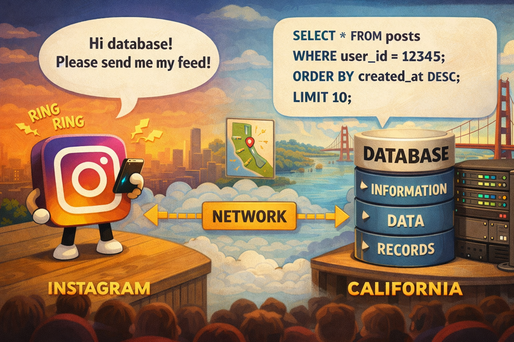

Teil 1: Datenmodellierung
-
Wie muss ich meine Daten strukturieren, um sie in eine Datenbank
speichern zu können?
- Wie kann ich inkonsistente Daten vermeiden?
-
kann ich automatisch den Ort anpassen lassen, wenn die PLZ
geändert wird?
- Wie kann ich die Leistung der Datenbank optimieren?
Teil 2: SQL - Datenbank Programmiersprache
- Wie kann ich neue Daten eintragen und bestehende ändern?
-
Wie kann ich spezifische Daten abfragen (alle Blog-Posts zwischen
1.1.2020 und 31.12.2020) Durchschnittslohn pro Firmenabteilung?
- Wie kann ich den Zugriff auf Daten einschränken?
Warum brauchen wir Datenbanken?



## Auftrag (15 Minuten)
* In Gruppen von 1-3 Personen, wählen Sie ein App oder eine Website aus, welche Daten benutzt. (Sport App, E-Commerce, Blog, Game, etc..)
* Überlegen Sie sich, welche Daten die App speichert und anzeigt.
* **Präsentieren Sie** die App (Oder ein Screenshot) und Ihre Notizen der Klasse
* Beispiel Instagram
Note:
Instagram Beispiel zeigen